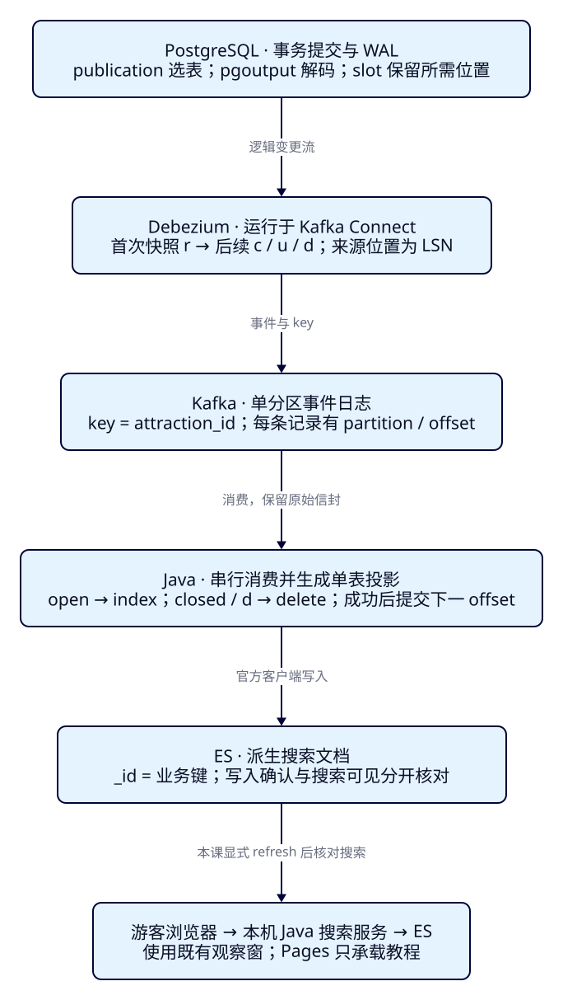
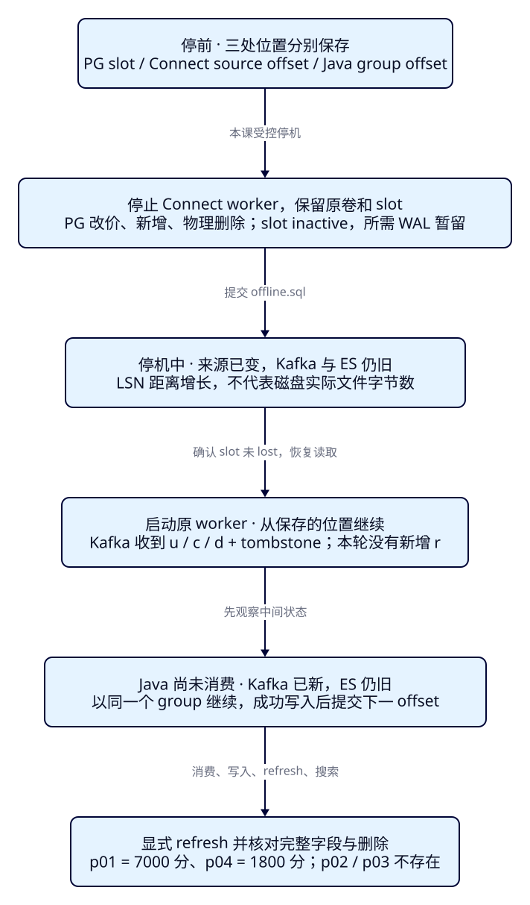

PostgreSQL的一次增删改，
怎样进入ES？
商家把西湖游船从60元改成65元，游客再次搜索时应该看到新价格；景点下架或删除后，旧卡片也应退出结果。F36能手工列出已知变更的键，但网站不能靠人每次导文件。本课第一次接通PostgreSQL变更日志、Debezium、Kafka和Java消费者，让单张表的变化进入ES，并沿途证明“改了、发了、写了、能搜了”各发生在哪里。
学完能用输出证明什么
- 解释WAL、pgoutput、publication、slot的不同职责；用受限CDC账户完成快照与流式捕获，验证缺少副本标识时删除被拒绝。
- 对照同一业务键的Kafka key、r/c/u/d、tombstone和ES文档；区分下架更新与物理删除，解释Java何时提交消费位置。
- 保留原slot与位置停止、启动连接器，核对停机期间的WAL距离、Kafka积压、Java恢复和最终完整字段；说明本课尚未证明的故障边界。
本课目录
图解跳转：01 · 变更怎样走到搜索 · 02 · 停机与恢复的分层证据
1. 数据库已经改价，为什么网页还可能显示60元？
Elasticsearch保存适合检索的派生文档，业务事实仍由PostgreSQL事务维护。数据库不会因为ES中碰巧有同一个p01，就自动更新那份文档。F36手工补齐依赖事先知道哪些键变化；若景点已被物理删除，再查当前行连键都找不到。
这次让数据库提交的变更留下可持续读取的线索，再交给Java执行搜索投影规则。这种捕获数据变化的方式称为CDC。它不会替我们决定文档边界：本课故意只用一张完整景点表，专注验证传递路径。城市、标签关联仍按F36理解，F39再扩展多表投影。
游客操作保持不变：在已有本机观察窗搜索“西湖”、HZ、200元和3km。初始两张卡为p01/60元、p02/0元；改价和下架后变为p01/65元、p03/30元；物理删除p03后只剩p01；停机期间不会凭空出现新卡，恢复并刷新后得到p01/70元、p04/18元。每一步都要能以原始ID和整数分核对，不能只凭页面“有两张卡”判断正确。
2. 一次变化，要经过哪些职责？
PostgreSQL先把数据库修改记录在WAL中。WAL是数据库的预写日志，不是直接可消费的旅游JSON，也不是业务审计表。逻辑解码把底层记录解释成行变化；本课使用PG内置的pgoutput输出插件，因此无需往PG安装第三方解码插件。
本课有两个容易混淆的名字。publication声明发布哪张表的变化，本课只列f37.attraction；它不保存Java消费进度。replication slot维护逻辑读取所需的位置和资源，本课叫f37_slot；连接断开后它仍可能要求PG保留WAL。一个slot同时只由一个接收者读取，不能让两个无关连接器轮流共用来“节约槽位”。这些职责见PG17逻辑解码说明与publication说明。
Debezium运行在Kafka Connect worker中，读取一致快照和后续逻辑变化，把业务键、前后值与来源位置包装成事件并写Kafka。Kafka按topic的分区存放有序记录；Java再消费、生成投影、调用ES。连接器已经RUNNING，只能证明任务状态，不能证明某条价格已经出现在搜索结果里。

3. 独立启动四个基础服务，先把读取权限划清
本课Compose项目es-framework-f37，PG数据库travel_f37、schema f37；ES回环20137，Kafka宿主入口29137，Connect REST回环18137，既有搜索服务18087。PG不发布宿主端口，SQL通过容器内psql执行。Kafka为单节点KRaft，同时承担broker/controller，无ZooKeeper；业务topic显式1分区、1副本、保留7天、cleanup.policy=delete，不用压缩过程隐藏事件证据。
制品固定PG17.5-bookworm、Kafka4.0.1、Debezium Connect3.3.1.Final，前三者在compose中锁定镜像digest；Connect镜像内部实际使用Kafka4.1.0，与外部broker4.0.1、Java客户端4.0.1分开记录。ES9.4.0 / Lucene10.4.0，应用沿用Boot4.0.8 / JDK25.0.4.1+1 / 官方Java与Rest5 Client9.4.8；ES内置JVM26.0.1不是应用JDK。本课固定实验制品不表示最新补丁推荐。完整制品与构建证据见运行身份。
本机需Docker、Python3、curl和完整JDK25，先设置JAVA_HOME/PATH。随机PG管理员密码与CDC密码由init写进被忽略的infra/f37/.local，目录0700、文件0600；已有文件或数据卷时拒绝覆盖。start保留原卷，不能把新密码文件混进旧PG卷。此隔离学习环境显式关闭ES认证，Kafka/Connect采用本机明文入口；回环绑定不能替代网络内权限，正式部署按F35另行设计，本课不声称进行了生产安全验收。
cd projects/travel-search
python3 labs/f37/lab.py init --out /tmp/f37-init
python3 labs/f37/lab.py start --out /tmp/f37-setup
cd backend
./mvnw -B -ntp clean package dependency:build-classpath -Dmdep.outputFile=target/f37-classpath.txt
cd ..
backend/mvnw -B -ntp -f labs/f37/pom.xml dependency:build-classpath -Dmdep.outputFile=target/kafka-classpath.txtPG需要wal_level=logical、足够的max_replication_slots和max_wal_senders；本课各设4，并显式设max_slot_wal_keep_size=128MB。Kafka使用256MiB堆与16MiB日志清理去重缓冲；作者初次192MiB堆遇到LogCleaner OOM，修正后才进入正式两轮。完整配置保留在工程，不要求读者自行拼接基础设施。
展开本课完整Compose配置
name: es-framework-f37
services:
postgres:
image: postgres:17.5-bookworm@sha256:fbcea1bd13b6a882cd6caa6b58db3ae5c102efe50ec625b3e2a5cbc50db5bfe4
command: [postgres, -c, wal_level=logical, -c, max_replication_slots=4, -c, max_wal_senders=4, -c, max_slot_wal_keep_size=128MB]
environment:
POSTGRES_USER: travel
POSTGRES_DB: travel_f37
POSTGRES_PASSWORD_FILE: /run/secrets/pg-password
secrets: [pg-password]
volumes:
- pg-data:/var/lib/postgresql/data
- ../../data/f37:/lesson:ro
mem_limit: 256m
healthcheck:
test: [CMD-SHELL, "pg_isready -U travel -d travel_f37"]
interval: 3s
timeout: 3s
retries: 40
kafka:
image: apache/kafka:4.0.1@sha256:9a129e03121d46d74349a480f8f17082df3dd411b28281c9eabb95cf096370b9
environment:
CLUSTER_ID: ZjM3bGFiLXNpbmdsZS1ub2Rl
KAFKA_NODE_ID: 1
KAFKA_PROCESS_ROLES: broker,controller
KAFKA_CONTROLLER_QUORUM_VOTERS: 1@kafka:9093
KAFKA_LISTENERS: INTERNAL://:9092,CONTROLLER://:9093,EXTERNAL://:9094
KAFKA_ADVERTISED_LISTENERS: INTERNAL://kafka:9092,EXTERNAL://127.0.0.1:29137
KAFKA_LISTENER_SECURITY_PROTOCOL_MAP: INTERNAL:PLAINTEXT,CONTROLLER:PLAINTEXT,EXTERNAL:PLAINTEXT
KAFKA_CONTROLLER_LISTENER_NAMES: CONTROLLER
KAFKA_INTER_BROKER_LISTENER_NAME: INTERNAL
KAFKA_OFFSETS_TOPIC_REPLICATION_FACTOR: 1
KAFKA_OFFSETS_TOPIC_NUM_PARTITIONS: 1
KAFKA_TRANSACTION_STATE_LOG_REPLICATION_FACTOR: 1
KAFKA_TRANSACTION_STATE_LOG_MIN_ISR: 1
KAFKA_GROUP_INITIAL_REBALANCE_DELAY_MS: 0
KAFKA_NUM_PARTITIONS: 1
KAFKA_AUTO_CREATE_TOPICS_ENABLE: "false"
KAFKA_LOG_DIRS: /var/lib/kafka/data
KAFKA_HEAP_OPTS: -Xms256m -Xmx256m
KAFKA_LOG_CLEANER_DEDUPE_BUFFER_SIZE: 16777216
ports: ["127.0.0.1:29137:9094"]
volumes: [kafka-data:/var/lib/kafka/data]
mem_limit: 512m
connect:
image: quay.io/debezium/connect:3.3.1.Final@sha256:18ad5f606365b69133fec658d63b37483a54af171b4c9561e00e87c0303ea443
environment:
BOOTSTRAP_SERVERS: kafka:9092
GROUP_ID: f37-connect
CONFIG_STORAGE_TOPIC: f37-connect-configs
OFFSET_STORAGE_TOPIC: f37-connect-offsets
STATUS_STORAGE_TOPIC: f37-connect-status
CONNECT_CONFIG_STORAGE_REPLICATION_FACTOR: 1
CONNECT_OFFSET_STORAGE_REPLICATION_FACTOR: 1
CONNECT_STATUS_STORAGE_REPLICATION_FACTOR: 1
CONNECT_OFFSET_STORAGE_PARTITIONS: 1
CONNECT_STATUS_STORAGE_PARTITIONS: 1
OFFSET_FLUSH_INTERVAL_MS: 1000
CONNECT_CONFIG_PROVIDERS: file
CONNECT_CONFIG_PROVIDERS_FILE_CLASS: org.apache.kafka.common.config.provider.FileConfigProvider
HEAP_OPTS: -Xms256m -Xmx256m
ports: ["127.0.0.1:18137:8083"]
secrets: [cdc-properties]
depends_on:
postgres: {condition: service_healthy}
kafka: {condition: service_started}
mem_limit: 640m
es:
image: docker.elastic.co/elasticsearch/elasticsearch:9.4.0
environment:
cluster.name: travel-f37-lab
node.name: travel-f37-es
discovery.type: single-node
xpack.security.enabled: "false"
xpack.ml.enabled: "false"
ES_JAVA_OPTS: -Xms256m -Xmx256m
ports: ["127.0.0.1:20137:9200"]
volumes: [es-data:/usr/share/elasticsearch/data]
mem_limit: 768m
ulimits:
nofile: {soft: 65535, hard: 65535}
volumes:
pg-data:
kafka-data:
es-data:
secrets:
pg-password: {file: .local/pg-password.txt}
cdc-properties: {file: .local/cdc.properties}管理员创建表和publication，CDC账户f37_cdc仅授予LOGIN、REPLICATION、连接数据库、使用schema和SELECT现有表；不把表的所有权交给它。因此连接器设publication.autocreate.mode=disabled。REPLICATION本身是有力的数据库能力，不能把“该表不可写”理解为完成了所有隔离。prepare实际验证SELECT成功、UPDATE因42501被拒绝；连接器使用同一个账户完成快照与逻辑读取。
-- Administrator creates this publication; the CDC login is not an owner.
CREATE SCHEMA f37;
CREATE TABLE f37.attraction (
attraction_id text PRIMARY KEY CHECK (attraction_id ~ '^p[0-9]{2}$'),
name text NOT NULL,
city_code text NOT NULL,
ticket_price_fen bigint NOT NULL CHECK (ticket_price_fen >= 0),
status text NOT NULL CHECK (status IN ('open', 'closed')),
latitude double precision NOT NULL,
longitude double precision NOT NULL
);
INSERT INTO f37.attraction VALUES
('p01', '西湖 游船', 'HZ', 6000, 'open', 30.250, 120.150),
('p02', '西湖 步道', 'HZ', 0, 'open', 30.251, 120.151);
CREATE ROLE f37_cdc LOGIN REPLICATION PASSWORD :'cdc_password';
GRANT CONNECT ON DATABASE travel_f37 TO f37_cdc;
GRANT USAGE ON SCHEMA f37 TO f37_cdc;
GRANT SELECT ON f37.attraction TO f37_cdc;
CREATE PUBLICATION f37_publication FOR TABLE f37.attraction;attraction_id是固定业务主键，金额为CNY整数分，PG bigint对应ES long，坐标使用double precision以避免本课引入额外小数序列化格式。样本不改主键、无大字段TOAST和TRUNCATE操作。PG的默认replica identity使用主键；没有可用标识时，发布UPDATE/DELETE无法正确识别旧行。prepare在一个临时事务中改成REPLICA IDENTITY NOTHING，再删p01，实际被PG拒绝；一次性psql退出使整笔事务回滚，恢复默认标识且p01仍存在。不是把生产表长期改成NOTHING。
展开可恢复的副本标识反例
-- Run only through a one-shot psql -v ON_ERROR_STOP=1 connection.
-- The DELETE errors with 55000; exiting psql rolls back the entire transaction.
BEGIN;
ALTER TABLE f37.attraction REPLICA IDENTITY NOTHING;
DELETE FROM f37.attraction WHERE attraction_id = 'p01';
ROLLBACK;4. f37-c01：旧资料先通过快照入场，再接后续变化
WAL中的后续变化不能代替最初已有的p01和p02。snapshot.mode=initial在没有已保存来源位置的首次启动先读取表快照，再进入streaming；它不是“每次启动都重新全量覆盖ES”。F36是我们手动取得读视图、人工列键；这里由连接器管理快照与日志衔接。具体模式和边界见Debezium3.3快照说明。
下面prepare只在干净本课资源上执行：建表、权限和publication，创建topic、ES索引/alias、注册连接器并等首批事件。它不启动Java消费者，所以此时Kafka有资料、ES搜索仍为空。手工路径与自动run路径二选一，完整命令见本机实验入口。
python3 labs/f37/lab.py prepare --out /tmp/f37-manual
bash labs/f37/java.sh inspect
bash labs/f37/java.sh drain
curl --fail-with-body -sS http://127.0.0.1:20137/tut-f37-attractions-read/_doc/p01
bash labs/f37/requests.sh inspect
bash labs/f37/requests.sh refresh
bash labs/f37/requests.sh inspect注册请求是POST http://127.0.0.1:18137/connectors，body完整如下。口令引用服务端FileConfigProvider，实际值不进入JSON、浏览器或Pages；worker配置CONNECT_CONFIG_PROVIDERS与CONNECT_CONFIG_PROVIDERS_FILE_CLASS把它启用。topic.prefix与schema/表名共同得到travel_f37.f37.attraction。保留原始信封、关闭JSON schema包装，没有使用去壳SMT。
{
"name": "f37-pg",
"config": {
"connector.class": "io.debezium.connector.postgresql.PostgresConnector",
"tasks.max": "1",
"database.hostname": "postgres",
"database.port": "5432",
"database.user": "f37_cdc",
"database.password": "${file:/run/secrets/cdc-properties:password}",
"database.dbname": "travel_f37",
"topic.prefix": "travel_f37",
"plugin.name": "pgoutput",
"slot.name": "f37_slot",
"slot.drop.on.stop": "false",
"publication.name": "f37_publication",
"publication.autocreate.mode": "disabled",
"table.include.list": "f37.attraction",
"snapshot.mode": "initial",
"tombstones.on.delete": "true",
"key.converter": "org.apache.kafka.connect.json.JsonConverter",
"key.converter.schemas.enable": "false",
"value.converter": "org.apache.kafka.connect.json.JsonConverter",
"value.converter.schemas.enable": "false",
"poll.interval.ms": "200",
"status.update.interval.ms": "1000"
}
}展开ES mapping、alias与核对查询
{
"settings": {
"number_of_shards": 1,
"number_of_replicas": 0,
"refresh_interval": "-1"
},
"mappings": {
"dynamic": "strict",
"properties": {
"attraction_id": {
"type": "keyword"
},
"name": {
"type": "text",
"analyzer": "whitespace"
},
"city_code": {
"type": "keyword"
},
"ticket_price_fen": {
"type": "long",
"coerce": false
},
"currency": {
"type": "keyword"
},
"status": {
"type": "keyword"
},
"location": {
"type": "geo_point"
}
}
}
}{
"actions": [
{
"add": {
"index": "tut-f37-attractions-v001",
"alias": "tut-f37-attractions-read"
}
},
{
"add": {
"index": "tut-f37-attractions-v001",
"alias": "tut-f37-attractions-write",
"is_write_index": true
}
}
]
}{
"size": 20,
"track_total_hits": true,
"query": {
"match_all": {}
},
"sort": [
{
"attraction_id": "asc"
}
]
}两条快照记录的op都是r，表示read；不是两次新INSERT。key携带p01/p02。作者保存的首条原始记录如下，时间、LSN和txId属于该轮运行，重做不能硬比这些数字。相同快照中的行可能共享来源LSN，所以LSN也不能简单当成“一条消息一个编号”。
展开一条实际快照事件，含完整信封
{
"kind": "event",
"partition": 0,
"offset": 0,
"key": {
"attraction_id": "p01"
},
"value": {
"before": null,
"after": {
"attraction_id": "p01",
"name": "西湖 游船",
"city_code": "HZ",
"ticket_price_fen": 6000,
"status": "open",
"latitude": 30.25,
"longitude": 120.15
},
"source": {
"version": "3.3.1.Final",
"connector": "postgresql",
"name": "travel_f37",
"ts_ms": 1793272565645,
"snapshot": "first",
"db": "travel_f37",
"sequence": "[null,\"26711720\"]",
"ts_us": 1793272565645281,
"ts_ns": 1793272565645281000,
"schema": "f37",
"table": "attraction",
"txId": 759,
"lsn": 26711720,
"xmin": null
},
"transaction": null,
"op": "r",
"ts_ms": 1793272565705,
"ts_us": 1793272565705917,
"ts_ns": 1793272565705917023
}
}Java首次drain消费2条，group提交的下一位置为2，ES GET p01已是6000分。索引显式refresh_interval=-1，此时SEARCH仍为空；执行_refresh后搜索才出现p01/6000与p02/0。本课用显式刷新固定观察点，不承诺生产环境“每条事件立刻可搜”。
5. Java怎样把同一份事件变成搜索文档？
消费者有三种入口：inspect只查看记录，不加入应用消费组、不写ES、不提交；drain在业务写入暂停时消费到本次观察到的分区末尾后退出；follow持续轮询，适合另开终端观察。后两者使用同一f37-es-v1组，每次重启接着已提交位置继续。本课只允许一个应用消费者和一个分区，不能并行启动多个实例。
先解释写入契约。r/c/u都从after读取新状态：open按业务键index整份投影，覆盖旧文档；closed则删除搜索文档。d按key删除，因为SQL行已不存在。Kafka null值是tombstone，前面的d已经表达删除，本课确认处理后直接推进位置。遇到其他op、来源表不符或键不符时退出，不悄悄提交并跳过。关键映射如下，与工程逐字同步。
static String apply(ElasticsearchClient es, ConsumerRecord<String, String> record) throws Exception {
JsonNode key = JSON.readTree(record.key());
String id = key.path("attraction_id").asString();
if (!id.matches("p[0-9]{2}")) throw new IllegalArgumentException("Invalid business key");
// Debezium's d event performed the deletion; a null Kafka value is a compaction marker.
if (record.value() == null) return "tombstone";
JsonNode event = JSON.readTree(record.value());
JsonNode source = event.path("source");
if (!"travel_f37".equals(source.path("db").asString())
|| !"f37".equals(source.path("schema").asString())
|| !"attraction".equals(source.path("table").asString())) {
throw new IllegalArgumentException("Unexpected event source");
}
String op = event.path("op").asString();
if ("d".equals(op)) {
if (!event.path("after").isNull()
|| !id.equals(event.path("before").path("attraction_id").asString())) {
throw new IllegalArgumentException("Delete key/shape mismatch");
}
// A missing document is an acceptable result for this key-based delete.
return "delete:" + es.delete(d -> d.index(WRITE).id(id)).result().jsonValue();
}
if (!List.of("r", "c", "u").contains(op)) throw new IllegalArgumentException("Unsupported operation");
JsonNode after = event.path("after");
if (!id.equals(after.path("attraction_id").asString())) {
throw new IllegalArgumentException("Key/after mismatch; primary key changes are out of scope");
}
String status = after.path("status").asString();
if ("closed".equals(status)) {
return "delete:" + es.delete(d -> d.index(WRITE).id(id)).result().jsonValue();
}
if (!"open".equals(status)) throw new IllegalArgumentException("Unknown status");
var document = Map.of(
"attraction_id", id, "name", after.path("name").asString(),
"city_code", after.path("city_code").asString(),
"ticket_price_fen", after.path("ticket_price_fen").asLong(),
"currency", "CNY", "status", status,
"location", Map.of("lat", after.path("latitude").asDouble(),
"lon", after.path("longitude").asDouble()));
var body = JsonData.fromJson(JSON.writeValueAsString(document));
return "index:" + es.index(i -> i.index(WRITE).requireAlias(true).id(id).document(body)).result().jsonValue();
}关闭enable.auto.commit后，poll只取出记录，不代表ES已经成功。对每条记录，apply成功返回，才提交这个分区的offset+1；失败抛异常，当前记录及后续记录不再提交。下面循环没有先commit再写入，也不把Kafka取到的一批都提前确认。Kafka提交位置表示下一条要读的位置，见官方KafkaConsumer说明。
static Properties properties() {
var p = new Properties();
p.put("bootstrap.servers", "127.0.0.1:29137");
p.put("group.id", GROUP);
p.put("key.deserializer", "org.apache.kafka.common.serialization.StringDeserializer");
p.put("value.deserializer", "org.apache.kafka.common.serialization.StringDeserializer");
p.put("enable.auto.commit", "false");
p.put("auto.offset.reset", "earliest");
p.put("max.poll.records", "10");
p.put("default.api.timeout.ms", "20000");
return p;
} long end = consumer.endOffsets(List.of(tp)).get(tp);
long processed = 0, deadline = System.nanoTime() + Duration.ofSeconds(60).toNanos();
while (follow || consumer.position(tp) < end) {
var records = consumer.poll(Duration.ofMillis(500));
for (var record : records) {
if (!inspect) {
String result = apply(es, record); // an exception exits before committing this record
consumer.commitSync(Map.of(tp, new OffsetAndMetadata(record.offset() + 1)));
System.out.println(JSON.writeValueAsString(Map.of("kind", "applied",
"partition", record.partition(), "offset", record.offset(),
"key", JSON.readTree(record.key()), "result", result,
"committed_next", record.offset() + 1)));
} else {
var output = JSON.createObjectNode();
output.put("kind", "event").put("partition", record.partition()).put("offset", record.offset());
output.set("key", JSON.readTree(record.key()));
output.set("value", record.value() == null ? JSON.nullNode() : JSON.readTree(record.value()));
System.out.println(JSON.writeValueAsString(output));
}
processed++;
}
if (!follow && System.nanoTime() > deadline) throw new IllegalStateException("Drain timed out");
}稳定_id使重复的相同状态覆盖原文档，但写入ES与提交Kafka不在一个事务里。如果恰在两者之间崩溃，重启可能重复应用；更旧的事件也可能覆盖新值。本课只验证受控串行与正常停止/启动，没有实现外部版本、乱序删除保护、重试或DLQ，F40再专门处理。单个官方index/delete响应成功是写入确认，仍不等于search可见。
完整消费者、编译入口与首次定位逻辑
首次poll可能在加入组时已取到记录，工程会重新seek到已提交位置，避免把那批取出的记录漏掉。首次组无提交则显式从头开始；earliest只适用于保留完整本课历史的干净实验，过期日志不能靠它补回。
完整F37Consumer.java · 锁定Kafka客户端依赖 · 编译与执行入口。复用现有EsConfiguration与官方客户端，不新增Controller或前端代码。
6. f37-c02：下架更新与物理删除，不是同一种事件
先在PG新增p03=3000分，改p01=6500分，再把p02置为closed。每条SQL独立提交，无其他写入者；对应c、u、u。消费者未运行时，即使inspect已看到它们，ES仍是旧两份文档。drain后GET p01=6500、GET p02为404，但SEARCH刷新前仍旧；刷新后才变为p01/6500、p03/3000。
-- Each statement is its own committed transaction. No other writer in this lab.
INSERT INTO f37.attraction VALUES
('p03', '西湖 花园', 'HZ', 3000, 'open', 30.252, 120.152);
UPDATE f37.attraction SET ticket_price_fen = 6500 WHERE attraction_id = 'p01';
UPDATE f37.attraction SET status = 'closed' WHERE attraction_id = 'p02';bash labs/f37/requests.sh changes
bash labs/f37/java.sh inspect
bash labs/f37/requests.sh inspect
bash labs/f37/java.sh drain
curl --fail-with-body -sS http://127.0.0.1:20137/tut-f37-attractions-read/_doc/p01
bash labs/f37/requests.sh refresh
bash labs/f37/requests.sh inspect
bash labs/f37/requests.sh delete
bash labs/f37/java.sh inspect
bash labs/f37/java.sh drain
bash labs/f37/requests.sh refresh
bash labs/f37/requests.sh inspectdelete.sql只有DELETE FROM f37.attraction WHERE attraction_id='p03'。这次after=null、op=d，紧随其后还有同key、value=null的Kafka tombstone。前者是数据库删除事实，后者是日志压缩的标记；本课topic采用delete保留策略，发出tombstone并不会让历史事件立即消失。Java打印delete:deleted与tombstone，分别提交后，累计下一位置为7；刷新后只剩p01/6500。
展开实际物理删除事件：旧字段为何不能直接拿来用
{
"kind": "event",
"partition": 0,
"offset": 5,
"key": {
"attraction_id": "p03"
},
"value": {
"before": {
"attraction_id": "p03",
"name": "",
"city_code": "",
"ticket_price_fen": 0,
"status": "",
"latitude": 0.0,
"longitude": 0.0
},
"after": null,
"source": {
"version": "3.3.1.Final",
"connector": "postgresql",
"name": "travel_f37",
"ts_ms": 1793272590032,
"snapshot": "false",
"db": "travel_f37",
"sequence": "[\"26712392\",\"26735064\"]",
"ts_us": 1793272590032193,
"ts_ns": 1793272590032193000,
"schema": "f37",
"table": "attraction",
"txId": 763,
"lsn": 26735064,
"xmin": null
},
"transaction": null,
"op": "d",
"ts_ms": 1793272590232,
"ts_us": 1793272590232057,
"ts_ns": 1793272590232057124
}
}这里before.name为空串、before.ticket_price_fen为0，不代表景点删前免费或没有名字。本课默认副本标识只保证删除所需的主键；在当前连接器/转换配置下，其他旧字段呈现占位。不要用这些值恢复旧投影，也不要假定before必有完整旧行。单表删除只需稳定业务键，因此无需为了本课无条件改成REPLICA IDENTITY FULL；需要关联旧值时，F39再根据事件契约选择。
7. LSN、来源offset和消费offset，各自说明哪一段？
判断恢复不能只写“offset变大了”。PG日志位置称为LSN，文本如0/197F410；事件source.lsn以数字表达来源日志位置。Kafka offset则只在一个topic分区内定位记录，数值从0开始，和LSN不是同一单位。下表的三处持久状态要一起保留；任意更换topic.prefix、slot、Kafka卷或消费组都会改变恢复前提。
| 观察点 | 看什么 | 能说明与不能说明什么 |
|---|---|---|
| PG slot | restart_lsn、confirmed_flush_lsn、active、wal_status | 最早仍可能需要的位置与逻辑接收确认；不证明Java已写ES |
| Connect来源位置 | GET /connectors/f37-pg/offsets | f37-connect-offsets中的快照/来源LSN等进度；不是业务topic的消费组位置 |
| Java消费组 | CURRENT-OFFSET与LOG-END-OFFSET | 该topic分区下一条待读与末尾；lag=0仍不能证明完整字段或搜索可见正确 |
SELECT json_build_object(
'current_lsn', pg_current_wal_lsn(),
'wal_level', current_setting('wal_level'),
'max_slot_wal_keep_size', current_setting('max_slot_wal_keep_size'),
'slot', (SELECT row_to_json(s) FROM (
SELECT slot_name, plugin, slot_type, database, active,
restart_lsn, confirmed_flush_lsn, wal_status, safe_wal_size,
pg_wal_lsn_diff(pg_current_wal_lsn(), restart_lsn) AS retained_distance_bytes
FROM pg_replication_slots WHERE slot_name = 'f37_slot'
) s)
);curl --fail-with-body -sS http://127.0.0.1:18137/connectors/f37-pg/offsets
docker compose -f infra/f37/compose.yaml exec -T kafka /opt/kafka/bin/kafka-consumer-groups.sh --bootstrap-server kafka:9092 --describe --group f37-es-v1作者正式记录中，快照后group next/end均为2，下架和删除后均为7；LSN是另一组数。Connect来源offset定期提交，不必与刚收到的最后一条事件瞬时相等；confirmed_flush_lsn与restart_lsn也会有差距。各字段定义以PG17 slot视图为准，不能把其中任一位置解释成“游客已经读到了70元”。
8. f37-c03：停掉连接器后继续改价，能接着读回来吗？
先在没有其他写入者时停止整个Connect worker，保留PG、Kafka与ES原卷。等positions.sql显示slot.active=false，再执行offline.sql：改p01=7000、新增p04=1800、物理删除仍留在SQL里的closed p02。PG已提交，但连接器没有运行，Kafka末尾仍是7，Java即使drain也没有新记录可读，搜索仍只显示p01/6500。

UPDATE f37.attraction SET ticket_price_fen = 7000 WHERE attraction_id = 'p01';
INSERT INTO f37.attraction VALUES
('p04', '西湖 码头', 'HZ', 1800, 'open', 30.253, 120.153);
DELETE FROM f37.attraction WHERE attraction_id = 'p02';bash labs/f37/requests.sh stop-connect
docker compose -f infra/f37/compose.yaml exec -T postgres psql -X -qAt -v ON_ERROR_STOP=1 -U travel -d travel_f37 < data/f37/positions.sql
bash labs/f37/requests.sh offline
bash labs/f37/java.sh inspect
bash labs/f37/java.sh drain
bash labs/f37/requests.sh start-connect
curl --fail-with-body -sS http://127.0.0.1:18137/connectors/f37-pg/status
bash labs/f37/java.sh inspect
bash labs/f37/requests.sh inspect
bash labs/f37/java.sh drain
bash labs/f37/requests.sh refresh
bash labs/f37/requests.sh inspect
bash labs/f37/java.sh drainstart之后先等HTTP恢复、connector和唯一task都为RUNNING，再等inspect出现停机期间的4条记录：u p01、c p04、d p02、p02 tombstone。不要只等固定秒数就继续。来源slot仍叫f37_slot，Connect读取保存的来源位置；本次正常停启未再次发r。此时Kafka已新但Java尚未处理，ES仍旧，这个中间观察很重要。
同组Java再次drain从7接着处理，p02原本已因下架从ES删除，因此再次delete得到not_found是可接受的结果。index成功与删除确认之后，group下一位置到11；显式refresh，REST完整_source与当前SQL开放行逐字段相同：p01/7000与p04/1800，p02/p03 GET均404。再重启drain处理0条，next/end仍为11。两轮事件数和这个位置只针对本课固定顺序，实际重复投递时不能把11写成一般定律。
本机观察窗：仍然通过Java搜索ES
另开JDK25终端运行下列命令，打开本机18087观察窗。使用默认西湖/HZ/200元/30.25,120.15/3km；每个观察点点击搜索，核对ID、金额和请求JSON。Pages不调用本机服务，浏览器不持有数据库或ES凭据。
ES_URL=http://127.0.0.1:20137 ES_INDEX=tut-f37-attractions-read ES_CA_FILE= ES_API_KEY_FILE= APP_PORT=18087 java -Xms64m -Xmx192m -jar backend/target/travel-search-0.7.0.jar自动run会启动自己的18087进程，与手工进程二选一；结束后用原终端Ctrl+C停止。该观察窗只读搜索结果，事件和来源位置由上面的REST/Java核对，不冒称已有CDC管理页面。
9. slot替你保留位置，也会留下需要监控的WAL
停机实测中，slot的restart_lsn保持不动，current_lsn前进，二者差值增长；连接恢复后slot重新active并继续确认。这证明短暂停机期间所需日志仍可供本轮恢复。retained_distance_bytes是日志位置差，不是实际pg_wal文件大小，也不是这个表独占的日志量。
PG17的max_slot_wal_keep_size默认-1，允许slot不受该参数限制地保留WAL；本课显式改为128MB。它在checkpoint相关清理时约束保留，不是严格磁盘容量上限或“刚超过128MB就立即报错”的计时器。若所需日志被清理、slot变lost，旧位置不再足以恢复。不能随便drop再建同名slot就宣布补齐成功，应停止把该链路称为连续完整，按新快照/重建和对账方案恢复。参数依据见PG17复制设置。
监控要同时看来源写入速率、停机时间、slot状态/位置、Kafka保留和消费积压。本课没有灌满磁盘、触发128MB失效、做PG主备切换或测吞吐；不能把一次正常停启当成任意长停机都可恢复。本轮也没有把ES与Kafka提交变成恰好一次事务。
10. 点名清理、完整重做，再换数据库比较
自动验收运行同样三案例，保留SQL、Kafka原始事件、应用提交位置、REST/Java搜索、字段和删除断言。身份/guard/清理与浏览器附加请求另计；每轮主教学路径26 ES REST、7 Connect REST、5 Java搜索HTTP，消费者另有9次index/delete调用。状态轮询另计，不把脚本运行一次误写成一条HTTP。
python3 labs/f37/lab.py run --out /tmp/f37-round1
python3 labs/f37/lab.py cleanup --out /tmp/f37-cleanup1
python3 labs/f37/lab.py run --out /tmp/f37-round2
python3 labs/f37/lab.py cleanup --out /tmp/f37-cleanup2
python3 labs/f37/lab.py down --out /tmp/f37-down先停止自己开的follow消费者和18087搜索服务；若Connect正停着，先start connect并等REST恢复再清理。cleanup先校验本课身份和资源，再stop连接器、清除其source offsets、删除连接器，确认slot不活动后删除f37_slot/publication、f37 schema与专属账户，删除本课topic/group和ES索引/alias。保留三个具名数据卷、Connect内部topic和.local。只删ES索引、保留group的11位置，会造成重做后没有旧事件可读；只删来源offset又保留旧目标也可能重复初始化，不能随意混搭。
down只停止并移除本课服务和网络，保留具名数据；不停止其他课程或读者自己启动的Java进程。中断后检查连接器状态、关闭消费者，再用新的--out清理重来。实际两轮记录分别记录构建、CDC/ES、观察窗和限制，图解与HTTP阅读另行验收。
现在已经能解释PG单表的变化怎样走到搜索，但还没有解决多表组装、任意乱序或持续重建。F38将用独立MySQL环境复现同组变化，比较binlog、权限、schema history与恢复位置；不会要求同时运行两套数据库。本课到此为止，不提前实施F38。
官方依据与版本范围
- Debezium固定v3.3.1.Final配置定义与3.3 PG连接器：模式、发布范围、slot、事件信封和删除。
- PG17 publication/replica identity、slot字段、保留参数；本课17.5实测记录单列。
- Kafka4.0 Consumer位置与提交、Connect4.1持久状态配置；镜像内部4.1与broker/client4.0.1分开核对。
能力检查：用键、位置与字段回答
1. 商家改价已提交，Connect task也RUNNING，为什么不能马上说游客看到65元？
还要证明该键的u事件进入正确topic、Java消费并成功写入、消费位置在成功后提交，以及搜索视图已刷新。RUNNING是任务状态，不能替代具体事件与结果证据。
2. publication与slot分别解决什么问题？复制一份连接器配置，继续共用slot是否可靠？
publication定义发布范围，slot维护逻辑读取所需位置与资源。一个slot同时只能有一个接收者，独立连接器不能轮流共用同一进度；需要独立slot并核对来源身份。
3. p02只改成closed，为什么Kafka是u而ES却删除？
数据库行仍存在，因此是更新。搜索投影约定只保留open行，Java根据after.status执行delete；这与物理DELETE产生d不同。
4. 删除事件的before价格是0，能用它证明景点删前免费吗？
不能。本课默认副本标识提供删除所需键，其他旧值不保证完整，当前信封出现零/空串占位。按稳定业务键删除，不能把占位当业务事实。
5. Kafka offset=6的tombstone处理完成后，应提交6还是7？
提交该分区下一位置7。本课不再向ES执行第二次删除；原d已按key删除。它与PG LSN、Connect来源offset是不同进度。
6. 连接器停机时Java group lag=0，能证明SQL与ES一致吗？
不能。连接器未把新的PG变更写Kafka，Java已消费现有末尾也可能仍落后于数据库。要核对来源位置、连接器、Kafka和完整目标状态。
7. slot恢复为active、group next=end=11，为什么还要看完整_source与404？
位置只能说明读取到哪里，不能证明映射、下架规则、金额单位或删除正确。最终应与SQL开放行逐字段一致，p02/p03应确实不存在；之后再核对搜索可见。
8. 停机很久后slot已lost，直接重建同名slot再继续旧offset可以吗？
同名不补回丢失WAL。需要重新建立可信快照/增量衔接并对账，不能声称连续恢复；本课只实测短时正常停启。
实际陷阱
速记
| 问题 | 本课选择 | 判断证据 |
|---|---|---|
| 已有行怎么入场 | initial快照→streaming | 两条r，再出现c/u/d |
| 谁选表、谁留位置 | publication / slot | f37.attraction / f37_slot与LSN |
| 单表文档规则 | open index；closed/d delete | 业务键、完整_source、GET 404 |
| 何时确认消费 | ES成功后提交offset+1 | group next为2→7→11 |
| 何时能搜到 | 显式_refresh固定观察点 | GET与SEARCH前后对照 |
| 恢复依赖什么 | 原slot、来源offset、Kafka历史、group | 停机未丢日志、继续事件与最终字段 |
本课心法：沿同一个业务键，依次证明来源已提交、事件已进入、投影已写入和搜索已可见。